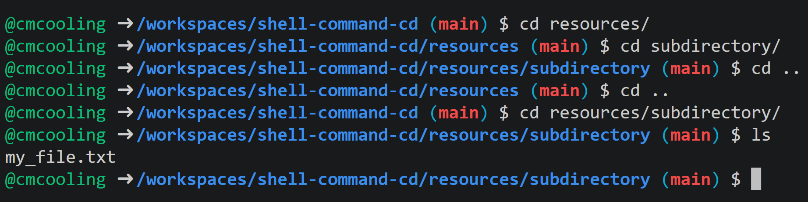

The cd command is used to change the current directory of the shell. It is available in shells in all Unix-like systems and some others, including:
Set-Location)The basic syntax of the cd command is cd followed by a path to the desired directory. This is most commonly a relative path, but can be an absolute path. cd .. allows you to move up one level in the directory tree.
.
├── content.html
├── license.md
├── metadata.json
└── resources/
├── cd_example.png
├── placeholder.txt
└── subdirectory/
└── my_file.txt
The image below shows how the cd command can be used to navigate this file structure. The path to the current directory is shown in the prompt.

In most shells, you can use the cd command without any arguments or with a tilde cd ~ as a shortcut to change to the home directory.
Use the button at the top of the page to open a Codespace. The files associated with this page will be available for you to explore.In the terminal, practice using the cd command to navigate the file structure.